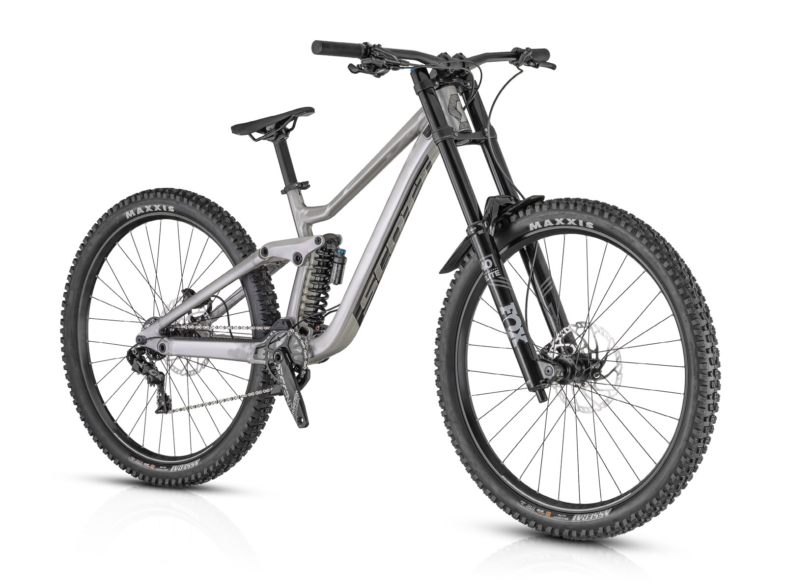
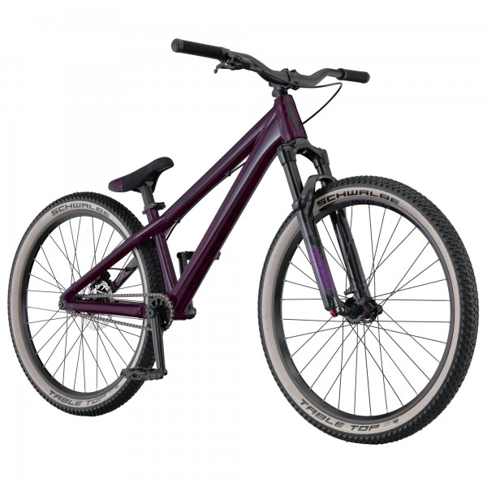
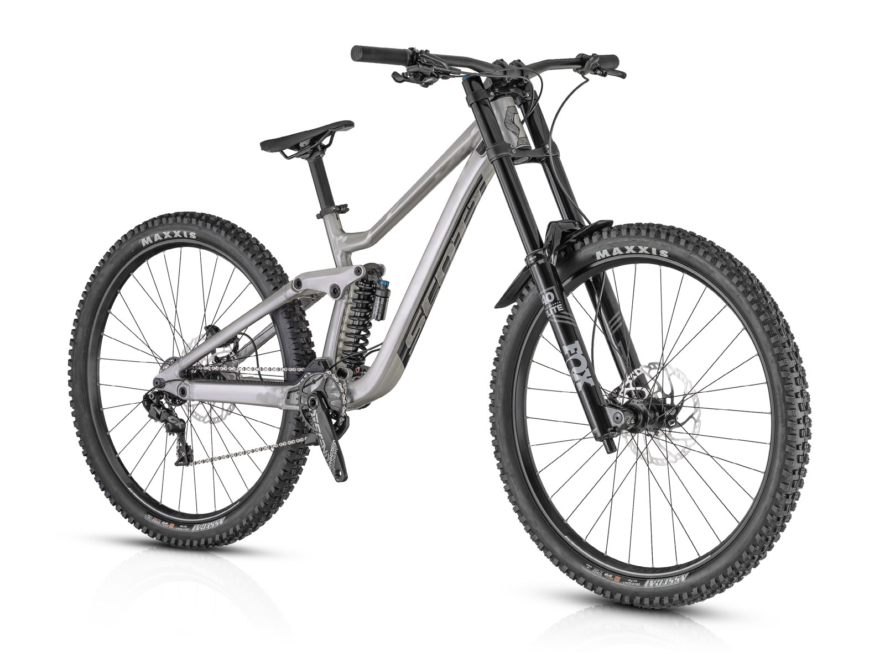
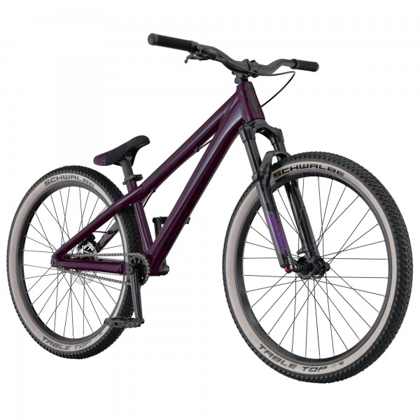
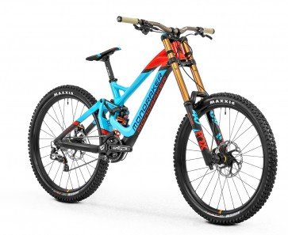
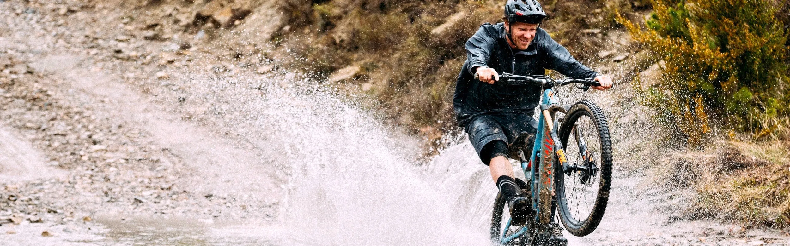

Nuevos modelos Scott
 Scott Spark

Scott Gambler

Scott Voltage YZ
Scott Spark

Scott Gambler

Scott Voltage YZ
Nuevos modelos Mondraker
 Mondraker Summum Mondraker Special Mondraker Quarter I
Mondraker Quarter I
Modalidades:
DownHill
Implica descender por la montaña en bicicleta en el menor tiempo posible. Si tuviéramos que definir con dos palabras el DH sería: agresividad y velocidad. Los que lo practican son subidos por camionetas a alguna zona de alta montaña, directamente al inicio del marcaje de la pista. Si esta pista se encuentra en un Bikepark posiblemente el modo de subir al ciclista sea mediante góndolas. Muchos de estos parques son centros de ski durante el invierno.
Enduro

En una carrera de enduro, gana el que mas rápido recorre la pista, pero a diferencia del downhill, en donde la pista es un descenso de 5 minutos aproximadamente, en el enduro encontramos subidas y bajadas.
En una buena carrera de enduro, existen de 4 a 5 pruebas especiales, dentro de un recorrido de 25km aproximadamente. La parte de la resistencia viene cuando a estos 25km de subidas y bajadas, le sumas un tiempo límite para terminar toda la carrera.
Estas carreras son de estrategia. Hay que saber cuándo y dónde darlo todo, y también en que partes de la pista hay que bajarle un poco para ahorrar energías.
Dirt Jump
El Dirt Jump MTB es una de las modalidades del BMX. Consiste en efectuar saltos con bicicletas de Montain Bike especialmente preparadas. Pero no solo se trata de impulsarse y saltar, sino de hacer figuras acrobáticas en el aire.Se impulsan mediante mesetas o dobles de tierra, hierro o madera. Pueden llegar a alcanzar entre 4 y 6 metros de altura, en aproximadamente 2 o 3 segundos lo que dura cada salto y cada uno depende de la dificultad de la figura que se realice.
Hay pistas especialmente diseñadas para la práctica del MTB, son parecidas a las pistas de BMX (Bycicle Motocross), pero en estas, los pilotos suelen usar saltos más grandes